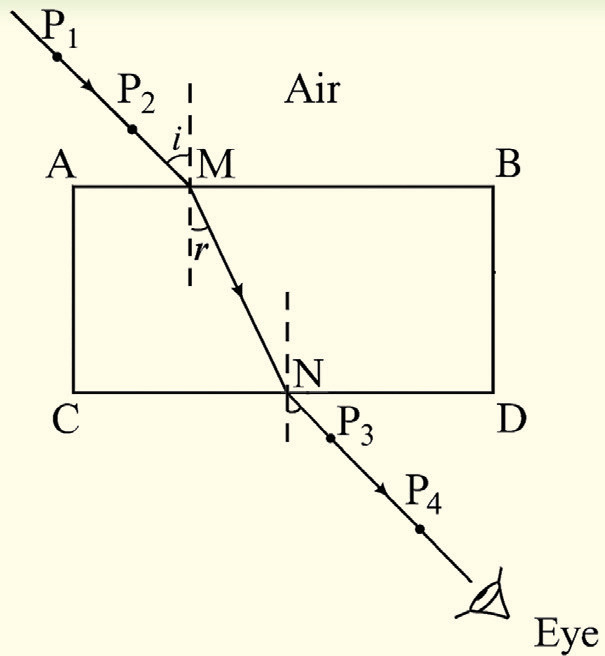

Question
Describe the path taken by a light ray travelling from the air into the glass block and the air again.
The lines , MN and show the path that a light ray follows from air, through the glass block and to air again. Light rays are refracted as they pass from air to glass (at the first boundary) and again as they pass from glass to air (at the second boundary).
Laws of refraction
When a beam of light passes through two different media via an interface, it bends. The amount of bending depends on the optical densities of the two media and the angle of incidence of the light beam. Note that, the angle of incidence and the angle of refraction differ in proportion to the difference in the optical densities of the two media. If a light ray passes from the optically less dense medium to the optically denser medium, it is bent towards the normal. However, if the ray travels from a medium of higher optical density to a medium of lower optical density, it bends away from the normal. Following various experimental observations, two laws govern the behaviour of a light ray as it strikes the interface between two media of different optical densities. These laws are known as the laws of refraction of light.